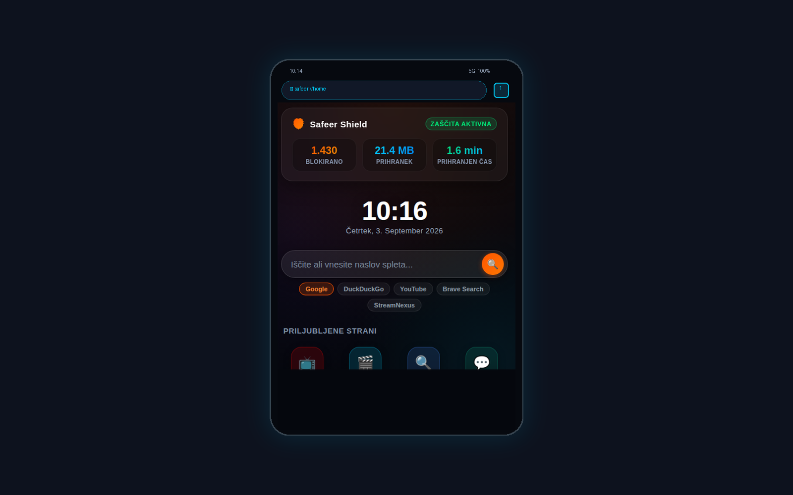
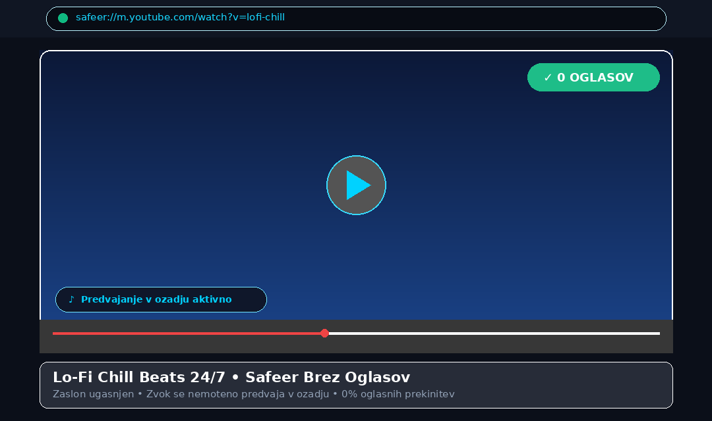
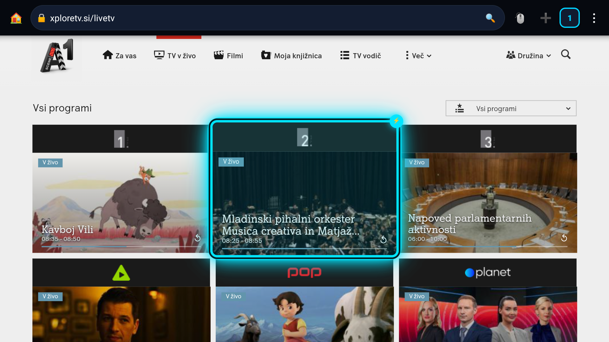

Kdor obvladuje brskalnik, določa pravila spleta. Milijon ljudi ima milijon različnih osebnosti, želja in potreb, a en sam neomajen cilj: odprt, varen in suveren internet na dosegu roke. Vzemi nadzor v svoje roke – Safeer je 100% odprtokoden projekt, kjer lahko vsakdo naredi fork in ustvari svoj popoln brskalnik.

Poslušajte glasbo, podcaste in oddaje brez prekinitev. Ugasnite zaslon ali preklopite v drugo aplikacijo – zvok se nemoteno predvaja naprej z znatnim prihrankom baterije.

Radix Domain Suffix Trie (O(k)) mikrosekundno preverja zahteve in nemudoma blokira C2 botnete (Dridex, Emotet) ter spletno ribarjenje.
Dridex/Emotet C2 strežnik takoj prestrežen (abuse.ch Feodo). Povezava je bila prekinjena pred izvajanjem.
Brez nerodnih navideznih mišk. Cianov fokusni obroč natančno skače med elementi z ničelno zakasnitvijo, strojno pospešeni ExoPlayer pa zagotavlja tekoč 4K video na vašem televizorju z gladkim 60 FPS drsenjem.

Safeer daje uporabnikom popolno ustvarjalno svobodo: izbirajte med temami (Midnight, Mint Emerald, Cyberpunk Neon, AMOLED Black), prilagodite vsako podrobnost z lastnim CSS-jem in dodajte svoje JavaScript skripte (Greasemonkey / Tampermonkey slog) za samodejno preskakovanje oglasov in uvodov, odstranjevanje pasic ali prilagajanje poljubnih spletnih strani.
Zakaj bi se prilagajali spletnim stranem, če se spletne strani lahko prilagodijo vam? Safeer prinaša vgrajen Tampermonkey / Greasemonkey mehanizem za samodejno izvajanje lastnih JavaScript uporabniških skript brez nameščanja zunanjih vtičnikov.
Kliknite ikono 🧩, poimenujte skripto, vnesite spletno stran in prilepite kodo. Brskalnik poskrbi za vse ostalo.
Izbirajte med 4 vgrajenimi temami (Midnight, Mint Emerald, Cyberpunk, AMOLED) ali z lastnim CSS-jem preuredite videz katerega koli elementa.
Vse vaše skripte se izvajajo lokalno v vaši napravi, brez sledenja, brez oblačnih strežnikov in brez ogrožanja zasebnosti.
// ==SafeerUserScript==
// @name YouTube Samodejni Preskok
// @match *://*.youtube.com/*
// @run-at document-end
// ====================
setInterval(() => {
const skipBtn = document.querySelector('.ytp-skip-ad-button, .skip-intro-btn');
if (skipBtn) {
skipBtn.click();
console.log('🛡️ Safeer: Oglas samodejno preskočen!');
}
}, 500);
Spletna stran se obnaša natanko tako, kot ji to dopusti tvoj brskalnik. Preveč časa so tehnološki monopoli odločali o tem, kaj smeš videti, koliko oglasov moraš potrpeti in kako se trguje s tvojo zasebnostjo. Čas je, da pravila znova določaš ti.
Milijon ljudi ima milijon različnih osebnosti, želja in potreb, a en sam neomajen cilj: imeti odprt, varen in neukročen internet na dosegu roke. Safeer zmanjšuje tveganje in blokira znana tveganja kot lokalni varnostni sloj. Projekt je 100% odprtokoden prav zato, da služi kot navdih in odskočna deska: vzemi izvorno kodo v svoje roke, naredi fork in prilagodi svoj brskalnik po lastnih željah in potrebah!
| Funkcionalnost | 🛡️ Safeer Browser | Google Chrome / Opera | Običajni TV brskalniki |
|---|---|---|---|
| C2 Botnet & Malware zaščita (abuse.ch) | ✓ Vgrajeno (O(k) Trie) | ✗ Osnovni filter | ✗ Brez zaščite |
| YouTube v ozadju z ugasnjenim zaslonom | ✓ Da (brezplačno) | ✗ Plačljiva naročnina | ✗ Se zaustavi |
| Blokada video oglasov & praznih okvirjev | ✓ 0 oglasov | ✗ Vsi oglasi | ✗ Brez blokiranja |
| Nativni Media3 ExoPlayer predvajalnik | ✓ 4K SurfaceView | ✗ Standardni web view | ✗ Zatikanje |
| D-Pad fokusni obroč za daljinec | ✓ 60 FPS navigacija | ✗ Nerodna miška | ✗ Počasno drsenje |
Optimizirano za zaslone na dotik, Galaxy S25, tablice in vse Android telefone (120Hz AMOLED).
Optimizirano za Philips TV, Sony, Xiaomi, MediaTek in upravljanje z daljincem.
Popolnoma opremljen za Linux: enotna instanca z Unix socketom, Awesomebar (localhost/razvijalci), Customizer Studio (teme, lasten CSS, UserScripts), 6 svetovnih jezikov in ukaz safeer v terminalu.